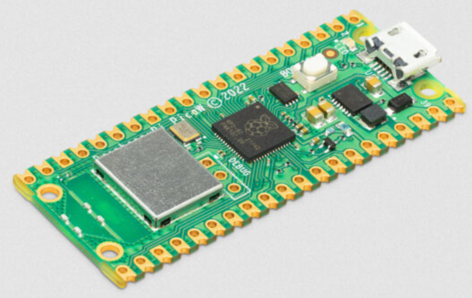
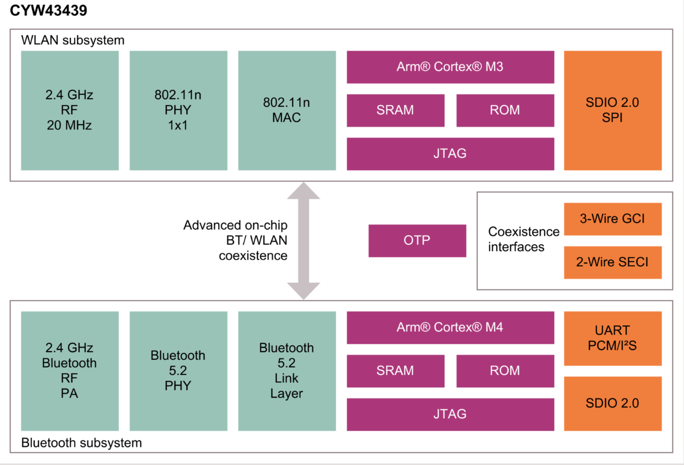
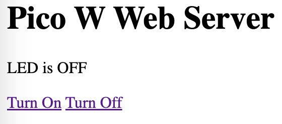

MicroPython Pico W Wireless Examples

One June 30th, 2022 the Raspberry Pi Foundation announced the availability of the Raspberry Pi Pico W. This $6 microprocessor now supports WiFi and with a software upgrade it may soon support Bluetooth.
The Pico W supports 2.4 Ghz 802.11n wireless networking. For MicroPython, we can use a MicroPython library built around the lwip TCP/IP stack. This stack is accessible using the MicroPython network functions.
The WiFi chip used is the Infineon CYW43439 chip. This chip also uses an ARM architecture and has extensive support for Bluetooth wireless communication.

You can read more about the capabilities of the WiFi/Bluetooth chip by reading the Infineon CYW43439 Datasheet. I found it interesting that the CYW43439 chip has 512KB of SRAM - almost double what the RP2040 chip contains!
Compatibility with Prior Code
The Pico W code is very similar to prior versions of the Pico with a few small exceptions. One of these is the fact that we must now use a symbolic label called an alias such as Pin("LED") instead of Pin(25) to access the LED pin, not a hardwired PIN number. This allows us to keep our code more portable as the underlying hardware changes.
1 2 3 4 5 6 7 8 9 10 | |
See the new Sample Blink code on the Raspberry Pi Examples site.
Getting the New Pico W Image
I had to download a brand new image for the Pico W runtime from the Raspberry Pi Foundation Software Site
After I downloaded the new image and ran a Stop/Reset on Thonny I got the following prompt:
1 2 3 | |
Note that the "Pico W" is listed in the prompt. If you do not see the "W" then the network code will not work.
Beginner WiFi Programs
We will store the name of our local WiFi network we wish to connect to and the password for that name in a file called secrets.py. This is called you WiFi "access point" and the variable name to store the name is called the `SSID. We will need to make sure we never save this file into a public GitHub repo by adding this file to our .gitignore file.
Setting Up Your WIFI secrets.py
By convention, we put both our SSID and password in a python file called "secrets.py". This file should never be checked into a public source code repository. We can add secrets.py to the .gitignore file to make sure the secrets.py is never checked into GitHub and exposing your passwords to everyone.
1 2 | |
By importing the secrets.py file you can then reference your network name like this:
1 | |
Testing Your WiFi Access Point Connection
Here is a very simple script to test see if your network name and password are correct. This script may work, but as we will see, it is both slow and potentially unreliable.
1 2 3 4 5 6 7 8 9 10 11 12 13 14 15 16 17 | |
Returns:
1 2 3 4 5 | |
If the result is a Failure you should check the name of the network and the password and that you are getting a strong WiFi signal where you are testing.
Note that we are using the sleep() function to insert delays into our code. However, the results may actually be faster or slower than our sleep times. Our next step is to add logic that will test to see if the networking device is ready and if our local access point allows us to login correctly.
Waiting for a Valid Access Point Connection
Sometimes we want to keep checking if our access point is connected before we begin using our connection. To do this we can create a while loop and continue in the loop while we are not connected.
1 2 3 4 5 6 7 8 9 10 11 12 13 14 15 16 17 18 19 20 21 22 | |
This code also supports a timer that will display the number of seconds for the access point to become valid in the console. The first time after you power on, this may take several seconds. After you are connected the connection will be cached and the time will be 0 milliseconds.
First run upon power on might take several seconds:
1 2 3 4 5 | |
The second and consecutive runs will use a cached connection.
1 2 3 4 5 | |
Error Handling
1 2 3 4 5 6 7 8 9 10 11 12 13 14 15 16 17 18 19 20 | |
The full TCP/IP stack is running on your Pico W. You should be able to ping the pico using the IP address returned by the status[0] of the wlan.ifconfig() function above.
Testing HTTP GET
The following example was taken from Tom's Hardware
1 2 3 4 5 6 7 8 9 10 11 12 13 14 15 16 17 18 19 20 21 | |
Returns:
1 2 3 4 5 6 7 8 9 10 11 12 | |
Listing the Functions in Your Network Library
The network library provided by the Raspberry Pi Foundation for the Pico W is new an may change as new functions are added. To get the list of functions in your network library you can use the Python help(network) at the prompt or use the dir() function.
Network Help
You can also get a list of the network functions by typing help(network) at the Python REPL prompt.
1 2 3 4 5 6 7 8 9 10 11 12 13 | |
Network dir() Function
1 2 3 4 5 | |
Returns:
1 2 3 4 5 6 7 8 9 10 11 12 | |
Urequest
It is easy to communicate with non-SSL protected HTTP protocols sites using the WLAN `urequest function. It supports the standard GET, POST, PUT and DELETE functions.
1 2 3 4 5 6 7 8 9 10 11 12 13 | |
Getting the MAC/Ethernet Access
You can get the device MAC/Ethernet address and test the roundtrip time between the RP2040 and the WiFi chip using the MAC address function.
1 2 3 4 5 6 7 8 9 10 11 12 13 14 15 16 17 18 19 20 21 22 23 | |
First Time After Power On Results:
1 2 3 4 | |
Note that it takes about 2.5 seconds just to power on the chip before we get the MAC address.
Subsequent Times
1 2 3 4 | |
Note
We must add the wlan.active(True) line to this code. If we don't do this, the wifi device will not be powered up and we can't get the MAC address. The function will return all zeros.
The MAC address is six bytes or "octets". The first three octets are assigned to the organization that created the device. The second three octets are assigned by the organization that created the device. See the Wikipedia Page on MAC Address for more information. If you run this on your Pico W the first octets should be similar.
Here are the two MAC addresses for two different Pico W devices:
1 2 | |
Because they were purchased together, their MAC address are very similar.
I ran this program on my Pico W and I got times of between 214 and 222 microseconds. This shows you that it takes about 100 microseconds to send a request from the RP2040 to the CYW43439 WiFi chip and about 100 milliseconds to return the results. This time lag represents some of the key performance limitations in using the Pico W for high-performance networking.
Advanced WiFi Programs
Once we have mastered the basics of connecting to a local access point and returning our IP address, we are no ready to build some sample Internet of Things applications.
Using the Pico W as a Web Server
This program turns your Pico W into a small web server. The web page has two links on it. One link will turn the on-board LED on and the other link will turn the LED off.
Screen image of Pico W Web Server: 
1 2 3 4 5 6 7 8 9 10 11 12 13 14 15 16 17 18 19 20 21 22 23 24 25 26 27 28 29 30 31 32 33 34 35 36 37 38 39 40 41 42 43 44 45 46 47 48 49 50 51 52 53 54 55 56 57 58 59 60 61 62 63 64 65 66 67 68 69 70 71 72 73 74 75 76 77 78 79 80 81 82 83 84 85 86 87 88 | |
SHTTP Support
Warning
This code is not working. I believe we need to get a SSL certificate for SSL to work. To do this I think we need to use a command line tool to generate a certificate for the device and store it in RAM.
1 2 3 4 5 6 7 8 9 10 | |
Sending Notifications
We can connect to a remote server to send text and e-mail notifications if specific events occur on our devices. To do this you must have credentials on some system that response to messages such as IFTTT or an MQTT server.
TBD